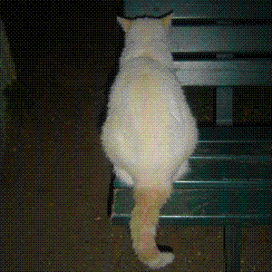

|
Transl. Christian Souchon (c) 2004 |
Note :
Il est intéressant de comparer cette description poétique avec une description scientifique de la vision nocturne du chat:
"En s'ouvrant (ou se dilatant), la pupille d'un chat peut s'élargir bien plus vite que la votre ou la mienne. Elle peut s'élargir trois fois plus que la votre ou la mienne. Cela laisse entrer une grande quantité de lumière et c'est une des raisons de la faculté qu'ont les chats de voir si bien par faible éclairement...
Une autre raison pour laquelle les chats voient si bien dans la pénombre, c'est la membrane qui tapisse le fond de leur oeil. On l'appelle "tapetum"et elle agit sur la lumière un peu comme un miroir. Quand la lumière pénètre dans l'oeil du chat, elle se réfléchit sur le tapetum avant d'atteindre les cellules réceptrices..."
(Source:
http://www.specialcat.com/CatEyesight.html)
It is worth while comparing the poet's description with the scientist's description of the cat's nighttime vision:
"When opening (or dilating), a cat's pupils can dilate much faster than yours or mine. They can also dilate three times larger than yours or mine can. This lets in a lot of light, and is one of the reasons cats have their famous ability so see well in low light...
Another reason for which cats see so well in poor lighting is that they have a special membrane at the back of their eyes. This membrane is called a tapetum, and it acts a little bit like a mirror for light. After light passes into a cat's eyes, it hits the tapetum and is reflected back through the receptors again..."
(Source:
http://www.specialcat.com/CatEyesight.html)